Visualizing the World Through its Own Worldview
World Values Survey visualization
This is a World Values Survey (WVS) visualization with additional data from Gapminder. Here you can learn more about what people think is important in life and what they think about their own lives in terms of their state of health and if they feel happy. Moreover data about each country's average life expectancy is also presented to add another dimension for analysis of correlations between life values. Click on a country to learn more about it. You can also zoom and pan on the map to easily find the country you want.

Each statement/category presents the number of percent of people who thinks the category is very important or rather important when it comes to work, politics, religion, leisure time and friends. For happiness, the number of percent corresponds to people who answered that they feel very happy or quite happy. For the state of health, the number of percent corresponds to people who answered that their state of health is very good or good. Life expectancy is the number of years a person is expected to live with current standards (data from Gapminder). Each category is encoded with a color which can be seen down below. A stronger color corresponds to a higher percentage. The color scale goes from the lowest percentage of all countries in that category over the 20 years (1995-2014) to the highest percentage of all countries. This helps to differentiate countries from another and makes it easier to see the overall importance of each category.
- Life expectancy
- Work
- Politics
- Family
- Religion
- Happiness
- State of health
- Leisure time
- Friends
The visualization is inspired by an example from Mike Bostock which can be found here.
Discovery process
The World Values Survey's visualization tools
I am interested to know what people think about life, what is important and how do they feel about their own lives. On the World Values Survey's website you have the option to select a wave. I am interested in the wave 2010-2014.
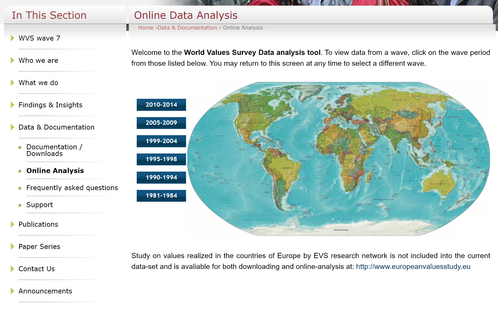In the next step I can pick between different countries I want to compare. I would like to select all countries at once, but that is not possible unfortunately. I select a couple of countries.
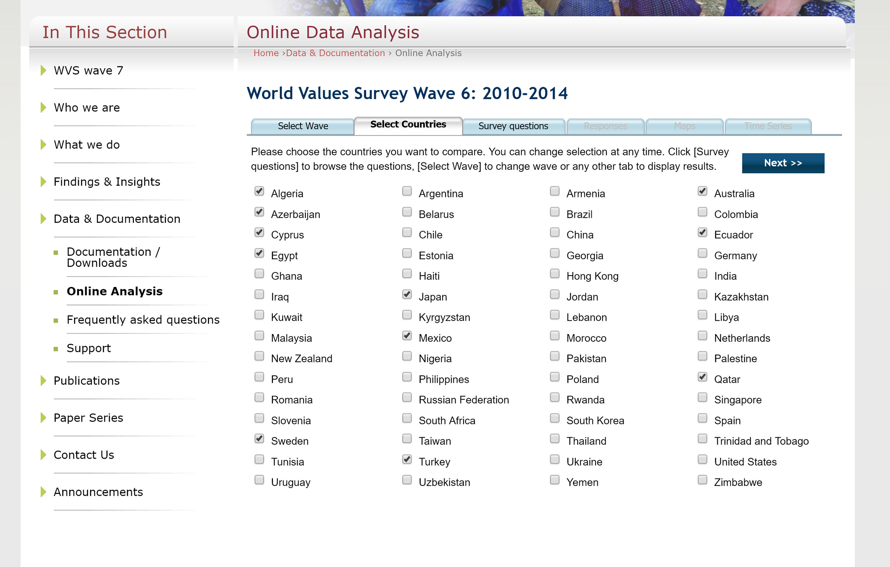I search for life and can see several life-related questions. I choose to go with politics.
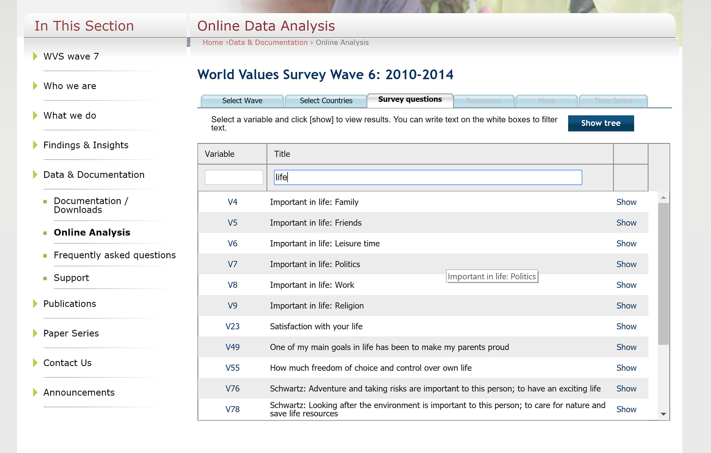From here I can see the percentages for the question alternatives between countries, but I would like to compare countries based on people who think politics is important.
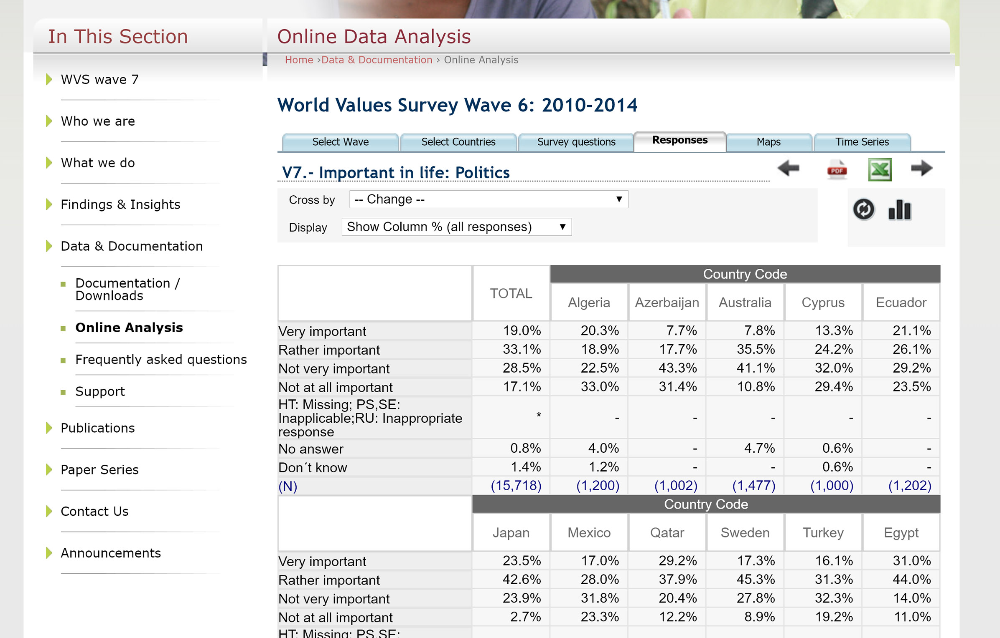I go to the map view and try to filter based on very and rather important answers, but cannot get it to work. Moreover it is hard to compare countries based on the world view since some countries are very small.
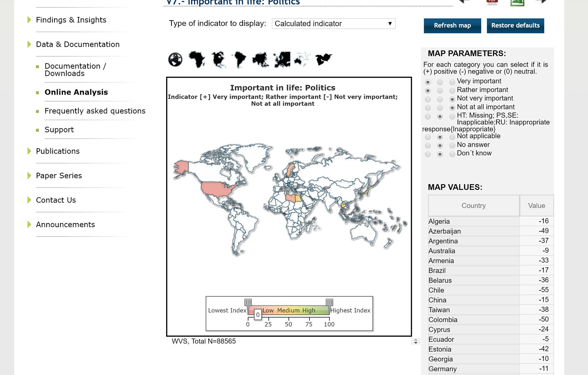 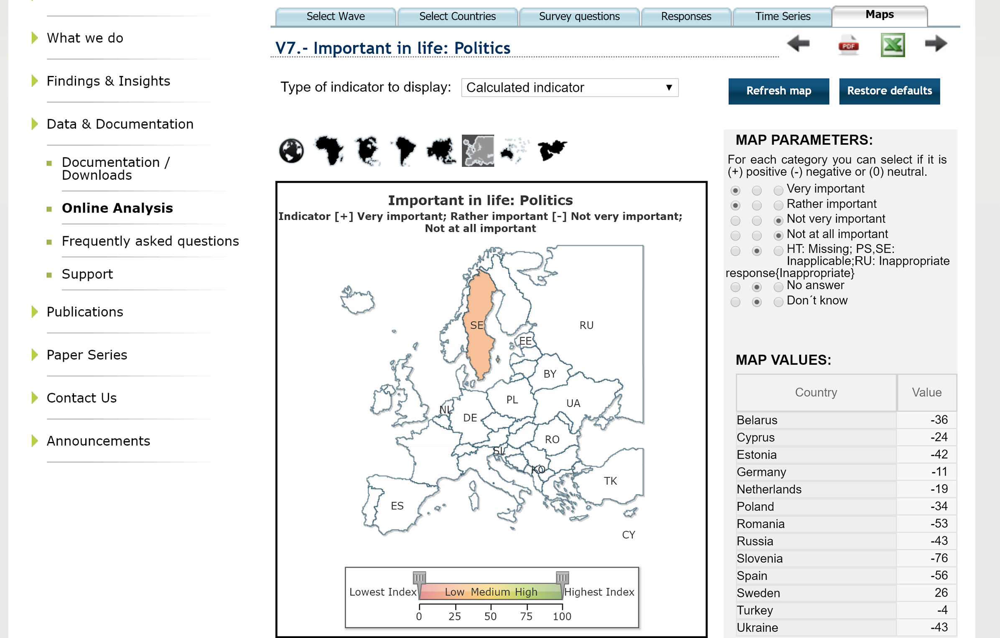I would also like to compare the results with other life-related questions (e.g. family is important) for each wave to find eventual correlations, but that is also not possible unfortunately. It is hard to draw any conclusions.
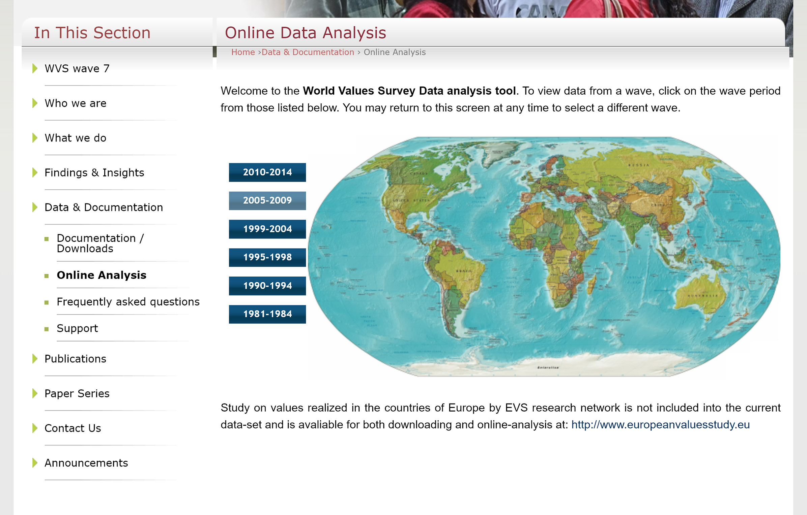 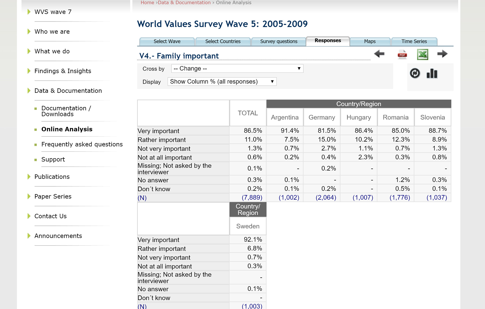New improved visualization
This visualization uses the navigation concept overview + detail. The overview consists of a world map where you can zoom and pan to easily find the country you want to analyze.
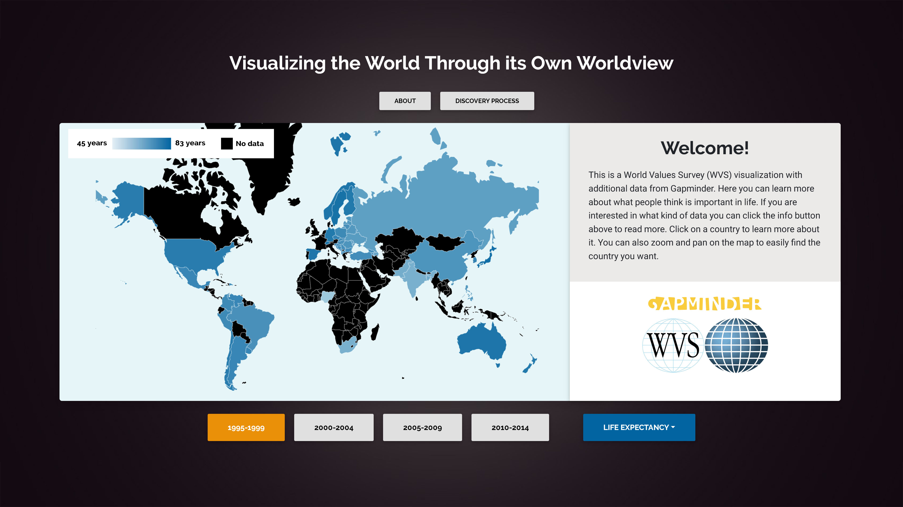It is easy to select a specific statement/category and get immediate response about the country's result because of preattentive features such as color and position.
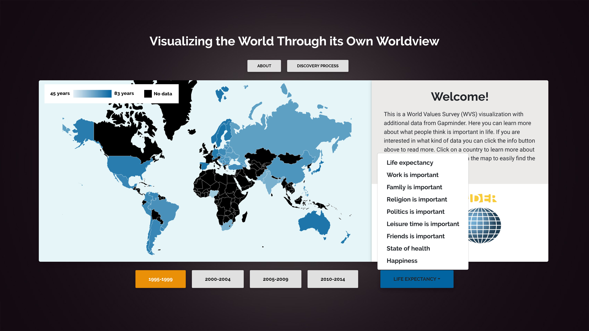Each category is color-encoded to differentiate the categories. Moreover the color on each country on the map corresponds to the summation of percent of people thinking that category is important. A stronger color denotes a higher percentage. In the upper left corner there is a color scale which goes from the lowest to the highest value over all 20 years (1995-2014), it helps to analyze the overall importance of that category.
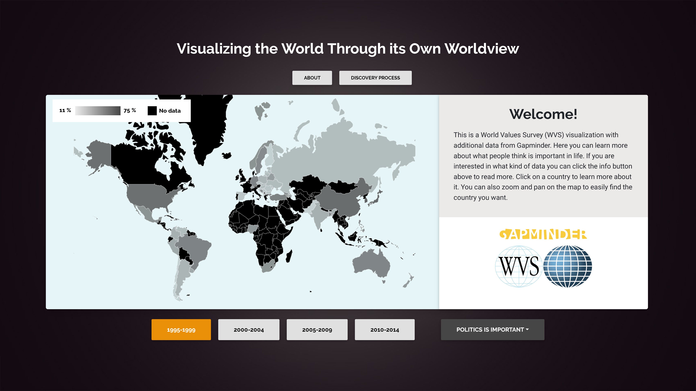 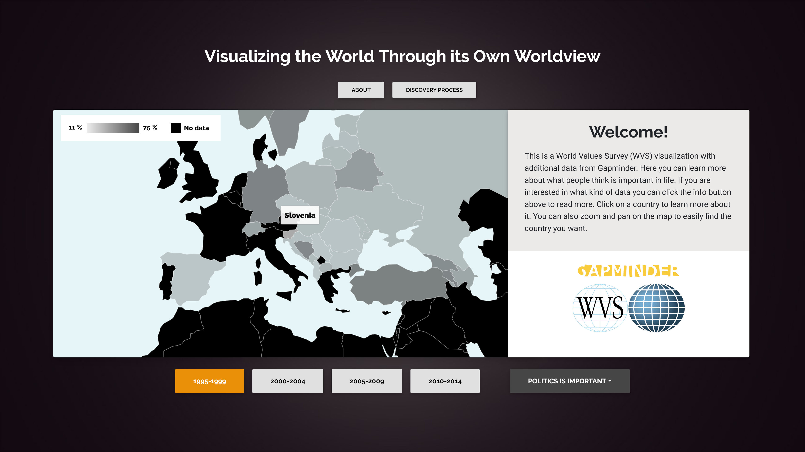A click on a country reveals its detail view with the results from all included life-related categories as a bar chart. I can tell that politics is of lowest importance in Slovenia.
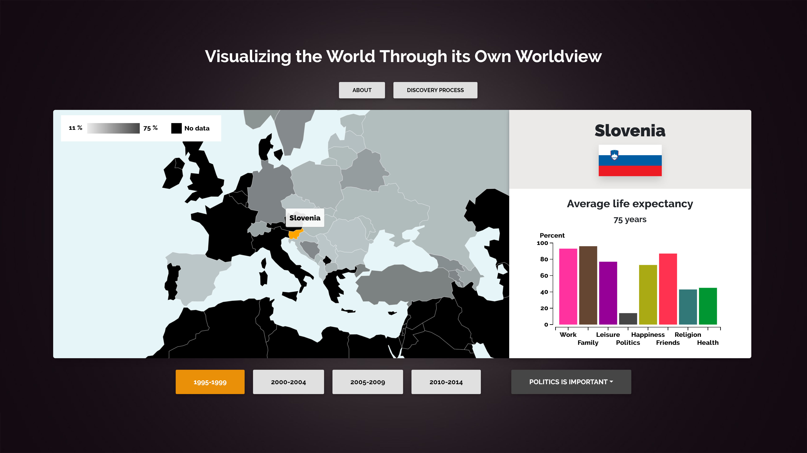Hover the bar chart to get the exact number in percent.
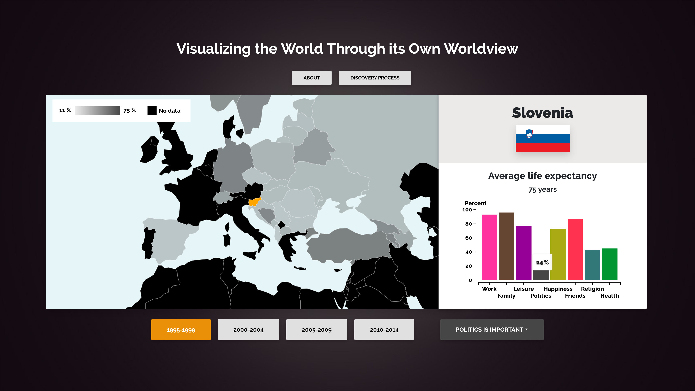It is easy to change wave and find out if the results have changed.
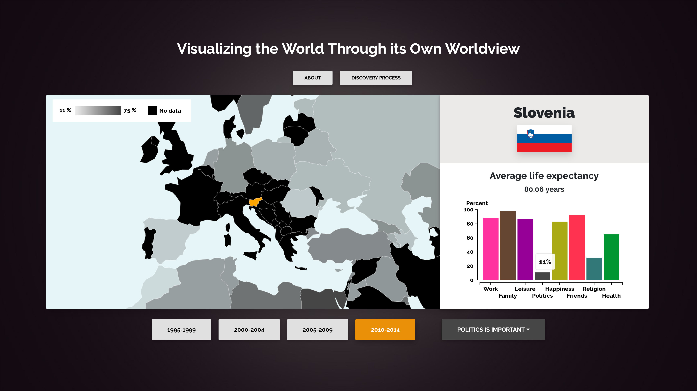A click on the bar chart will also update the map view with the specific category.
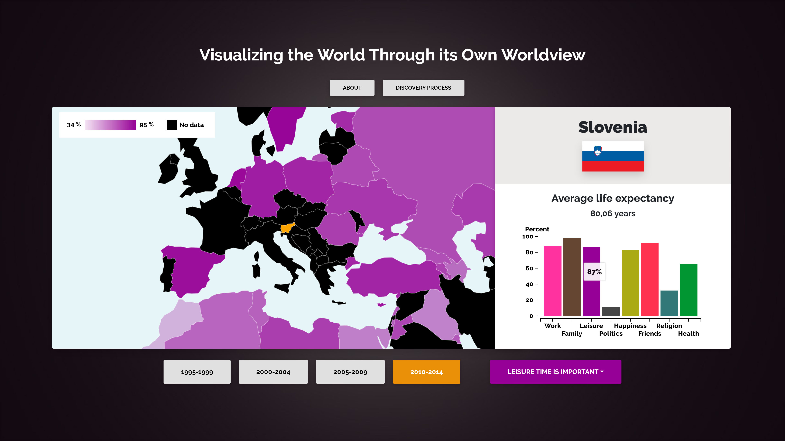What have I learned?
I have learned to analyze and breakdown a visualization to find areas for improvement. Furthermore, I have learned to put theory into practice, to make the new visualization easy to use, understandable and helpful for gaining insights about the dataset. From working with this project, I better understand the importance of and the complexity of how to do data cleaning and decide on what data structures to use, which will be helpful in any future data-related project. It has been a fun project and I now understand that people of Slovenia think politics is really not important at all.
Welcome!
This is a World Values Survey (WVS) visualization with additional data from Gapminder. Here you can learn more about what people think is important in life and what they think about their own lives. If you are interested in what kind of data you can click the about button above to read more. Click on a country to learn more about it. You can also zoom and pan on the map to easily find the country you want.